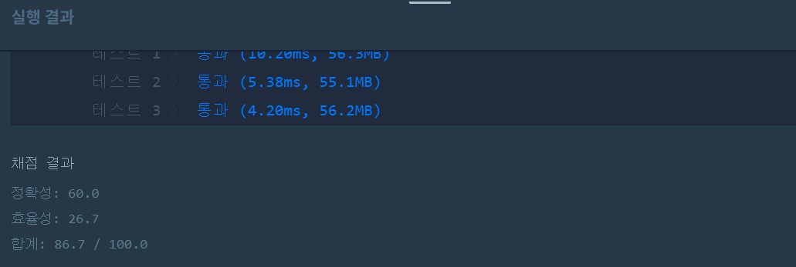
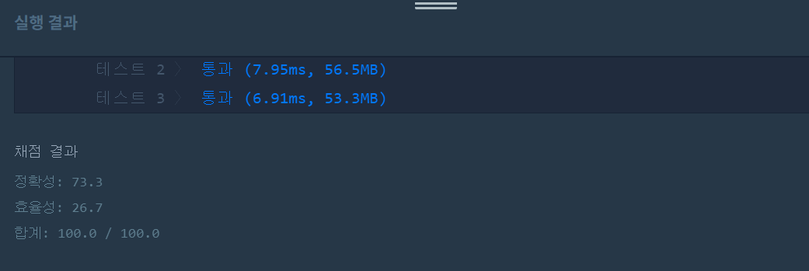

👀 문제
https://programmers.co.kr/learn/courses/30/lessons/42629
이 문제는 정말 골치 아픈 문제였다. 코드가 아예 잘못된게 아니라 특정 테스트케이스만 통과하지 못해서 더 포기할 수 없었다. 개인적으로 포인트를 차감하는 방법으로 테스트케이스를 볼 수 있었으면 좋겠다. 아직도 내 코드가 틀린 이유를 모르겠으며, 성공한 다른 사람들의 코드와 차이점이 무엇인지 알 수 없다. 문제 해결을 위해 도전한 코드들을 모두 리뷰하기엔 너무 많아서 제일 최근 것 하나만 작성해야겠다.
참고로 아래 테스트케이스를 추가하여 문제를 풀 것을 강력 추천한다. 테스트케이스를 생각하는 것도 골치 아파 죽는 줄 알았다.
마지막 케이스도 내가 생각할 때에는 4를 리턴해야 할 것 같은데 내 코드와 다른 사람들 코드는 5를 리턴한다. 그래서 일단은 5라고 적어놓는다.
| stock | dates | supplies | k | result |
|---|---|---|---|---|
| 4 | [1,2,3,4] | [10,40,30,20] | 100 | 4 |
| 5 | [1,2,3,4,5] | [1,1,1,1,25] | 30 | 1 |
| 1 | [1,2,3,4,5] | [1,1,1,1,25] | 30 | 5 |
👊 첫 번째 도전
1. 설계
- 오늘(이전 포함) 받을 수 있는 공급이 있다면 큐에 저장한다.
- dates의 값이 미래거나 마지막 공급까지 다 받은 경우라면 day에 오늘 날짜를 저장한다.
- 큐에 값이 있고 재고가 더 필요하다면 큐에서 뽑아 stock에 추가하고 answer을 증가한다.
2. 구현
import java.util.PriorityQueue;
import java.util.Collections;
/**
*
* @author HEESOO
*
*/
class Solution {
public int solution(int stock, int[] dates, int[] supplies, int k) {
int answer = 0;
PriorityQueue<Integer> pq=new PriorityQueue<Integer>(Collections.reverseOrder());
int day=0;
while(true){
for(int i=day;i<dates.length;i++){
if(stock>=dates[i]){//이전날들값은 큐에 추가
pq.offer(supplies[i]);
}
if(stock<dates[i]||i==dates.length-1){//미래 또는 다넣음
day=i;
break;
}
}
if(!pq.isEmpty()&&stock!=k-1&&stock<k){
stock+=pq.poll();
answer++;
}
else{
break;
}
}
return answer;
}
}
3. 결과
 실패. 테스트3, 5에서 틀렸다.
4. 문제점
알 수 없다. 이젠 지쳤다. 다른 사람 코드를 참고해야 할 때다.
👊 두 번째 도전
1. 설계
- 원래 공장으로부터 공급받는 k 이전까지 체크한다.
- 배열 순회에 사용할 idx가 dates 인덱스 범위에 만족하고, 오늘 받을 수 있는 공급이 있다면 큐에 삽입한다. idx++한다.
- 만약 오늘이 stock을 다 쓰는 날이라면 큐에서 pop하여 stock에 추가하고 answer++한다.
- 하루가 지나갔음을 나타내기 위해 day++한다.
2. 구현
import java.util.PriorityQueue;
import java.util.Collections;
/**
*
* @author HEESOO
*
*/
class Solution {
public int solution(int stock, int[] dates, int[] supplies, int k) {
int answer = 0;
PriorityQueue<Integer> pq=new PriorityQueue<Integer>(Collections.reverseOrder());
int day=0, idx=0;
while(day<k){
if(idx<dates.length&&day==dates[idx]){
pq.offer(supplies[idx]);
idx++;
}
if(day==stock){
stock+=pq.poll();
answer++;
}
day++;
}
return answer;
}
}
3. 결과
 행복하지 않은 🤟 성공 🤟
👏 해결 완료!
이해할 수 없다. 컴퓨터의 세계는 이해할 수 없어T_T